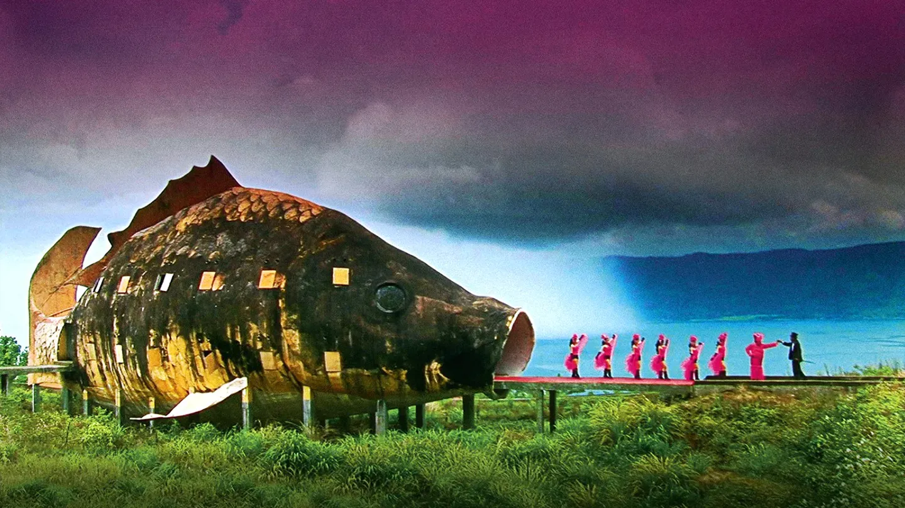

This film is a lot heavier than the others as it attempts to confront a war criminal, Anwar Congo who in the 1960's orchistrated the murder and torture of over a million alleged communists. This man and his allies are celebrated as heroes in their country so when asked to reenact their deeds for the doc they accept with happilly but upon playing it out and reconstructing the events Anwar's concience begins to stir and feelings of remorse surface.
I like this movie because to me it is a testament to the power of theater, film and art as a whole to allow us introspection and push boundaries.